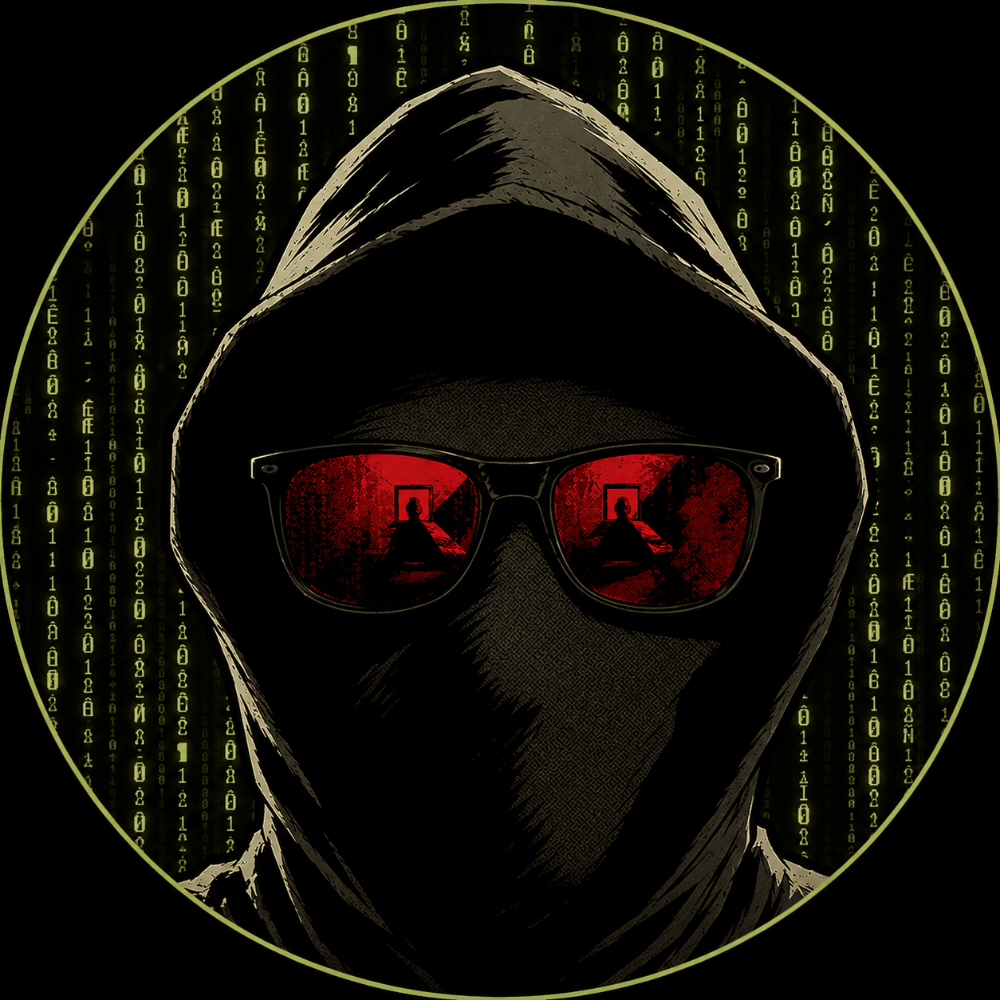

ZZX-Labs R&D is building a distributed consulting network of engineers, analysts, scientists,
designers, researchers, legal and policy advisors, security specialists, Bitcoin developers,
infrastructure builders, and technical visionaries.
Each consultant operates with professional independence. Introductions, retainers, scopes of work,
confidentiality terms, and technical coordination are handled carefully, with secure communications
preferred where sensitive information is involved.
The consultant network is designed for serious technical work where the right expertise matters more than
generic staffing. ZZX-Labs may coordinate introductions, project scoping, technical review, research
support, operational planning, and Bitcoin-native retainer structures where appropriate.
Public consultant listings are intentionally limited until formal participation, disclosure preferences,
security posture, and engagement terms are established. Some consultants may remain private, anonymous,
pseudonymous, or project-specific.
Profile Standard
Consultant Avatars and Public Profile Cards
Consultant profiles may display a portrait, pseudonymous avatar, role shield, or placeholder mark. Named
consultants can use approved portraits. Pseudonymous consultants can use avatar art. Private consultants can
remain unlisted or appear only as a role-based placeholder until disclosure terms are approved.
The same visual pattern is used across staff, consultants, and partners: a media area for portrait/logo,
a role kicker, a public name or codename, a scoped description, and optional links for profile routing.
Foundational Consultant Record
Public Consultant Directory

Executive Leadership
0xdeadbeef
Head Consultant
Founder of ZZX-Labs R&D and Principal of 0xdeadbeef Consulting.
Leads research strategy, technical architecture, cybersecurity,
Bitcoin engineering, AI/ML research, OSINT systems, software,
firmware, hardware, and long-term R&D initiatives across the
organization.
Placeholder for a vetted defensive security, threat intelligence, malware analysis, infrastructure
hardening, disclosure coordination, and adversarial systems consultant.
AI
Future Consultant Seat
AI / ML Consultant
Placeholder for an applied AI/ML consultant supporting model evaluation, data workflows, local
inference, fine-tuning, automation, agentic tools, and research systems.
Cybersecurity & Threat Intelligence
Defensive security, threat modeling, OSINT, malware analysis, incident review, infrastructure hardening,
vulnerability coordination, and adversarial system analysis.
AI / ML Research
Transformers, GPT systems, GANs, local model workflows, data pipelines, evaluation, fine-tuning,
knowledge systems, automation, and applied research tools.
Cryptolaw, national security policy, technology governance, open-source licensing, privacy, compliance,
research publication, contracting, and institutional risk review.
Engagement Types
How Consultants May Be Used
Consultant participation may range from short technical reviews to long-term advisory roles. Some work may
be direct consulting. Some may be research support. Some may be project-specific engineering. Some may be
private advisory work requiring careful confidentiality and compartmentalization.
Support for papers, reports, datasets, models, investigations, disclosures, proposals, and technical
analysis.
Project Execution
Hands-on implementation for software, web, firmware, hardware, Bitcoin, AI/ML, OSINT, cybersecurity,
and media systems.
Retainers
Bitcoin-Based Retainer Model
ZZX-Labs is Bitcoin-native. Future consultant retainers may support Bitcoin L1 settlement, Lightning Network
payments, milestone invoices, project escrow concepts, signed scopes of work, and cryptographically verified
payment records.
Until the full payment and account systems are rebuilt, retainers and engagement terms should be coordinated
directly through secure communication.
Confidentiality
Encrypted Introductions Preferred
Sensitive requests should use GPG-secured communication where practical. This is especially important for
cybersecurity work, infrastructure planning, private research, legal or policy matters, unreleased software,
vulnerability disclosures, datasets, credentials, architecture diagrams, or operational information.
ZZX-Labs does not publish private consultant details without permission. Public recognition, named listing,
biographies, credentials, project credits, or organizational affiliations should be opt-in and carefully
reviewed.
Network Access
Request a Consultant Introduction
For consulting, contracting, research advisory, security review, Bitcoin systems, AI/ML support, hardware
prototyping, legal/policy analysis, or technical development, contact ZZX-Labs with the project scope,
desired expertise, timeline, sensitivity level, and preferred communication channel.